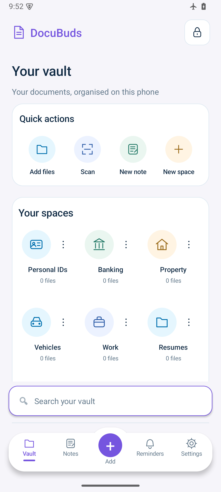
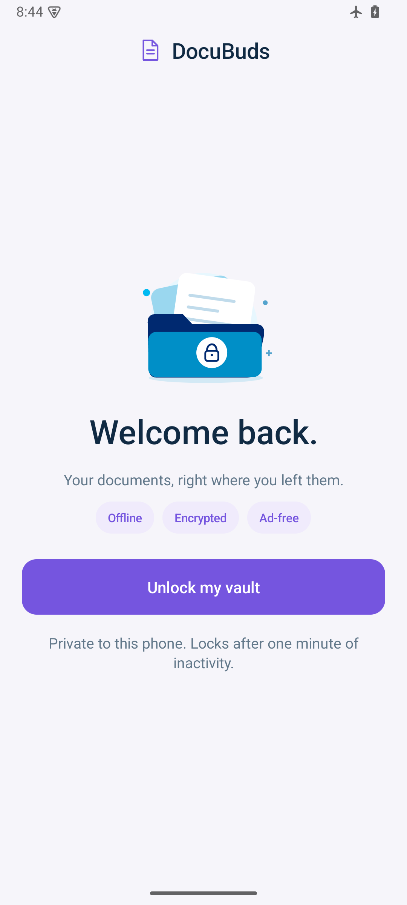
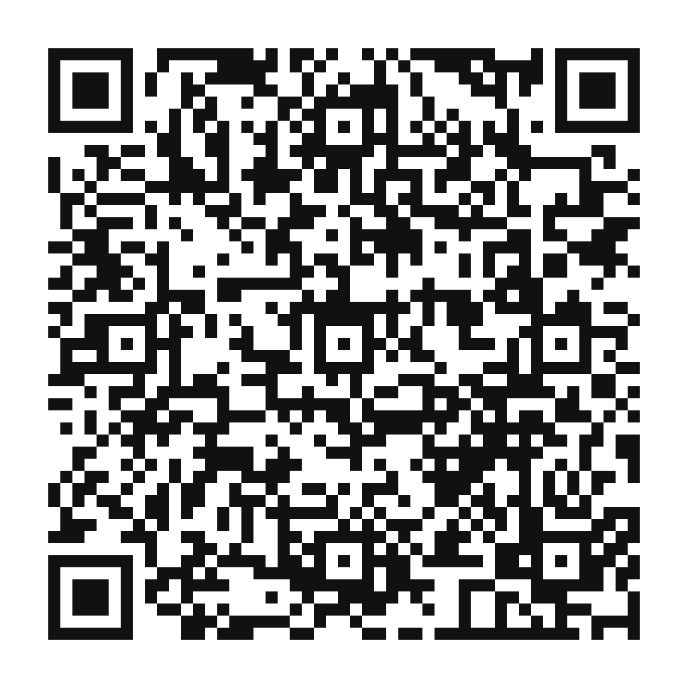

Your identity, organised
Keep Aadhaar, passport, driving licence and other personal IDs together, with documents and structured details.
Your passport, property papers, passwords and little notes. Together at last, in a personal vault that stays on your phone.

Give everything a space of its own. Name it your way, nest folders, and find the right thing with search that stays within reach.
Keep Aadhaar, passport, driving licence and other personal IDs together, with documents and structured details.
Home, shop, farmhouse or vehicle: create your own named spaces for ownership papers, agreements, tax receipts and insurance.
Group documents by company. Keep offer and joining letters, payslips, experience letters, certificates and resume versions within easy reach.
Write titled notes right in the app. Add formatting and checklists, pick a note colour, and let encrypted autosave keep up with your thoughts.
Import files, capture pages, read documents and use bundled English/Hindi text recognition offline. Crop image copies or turn images into PDFs.
Keep banking details and passwords, set local reminders, search your vault, and export or share a file when you choose.

Passing someone the APK gives them their own installation. It does not give them your vault, documents or encryption keys.
There is no backup, recovery key or developer reset. Losing your phone or its keys, uninstalling, or clearing app data can permanently lose your vault. Screenshots are allowed; exported or shared copies are outside vault protection. An unlocked or compromised phone can expose data. DocuBuds has not had an independent security audit.
Download the signed release from this page or GitHub. Allow installation from the source you use, only when Android asks.
Set up phone authentication, then make your spaces. No email address, registration or account to create.
Add documents and notes at your own pace. Keep the original copies of anything you cannot afford to lose.
No shared vault or universal developer key is included in the APK. Each installation creates its own vault keys. Someone with access to your unlocked phone or authentication can still access your data.
Yes. Export local copies or use Android's share sheet. Original imported file bytes are preserved for export and sharing; the receiving app can compress, store or transmit them. Camera captures and edited copies have their own image quality limits.
Phone authentication remains an alternative to the app PIN or pattern. There is no remote reset or vault recovery service. If the phone or the required device keys are lost, your vault cannot be recovered.
DocuBuds is free and ad-free. Donations are optional and do not unlock features. The app does not include a paid tier.
No. Release builds, lint, unit tests and selected emulator scenarios have been checked. That does not replace an independent security review or testing across physical phones.
The source is available in the public secured-documents-app repository. Signing keys, passwords and personal vault records are excluded. APK checksums are included with each release.
DocuBuds is made with care and shared for free. If it brings a little order to your day, you can send an optional thank-you to the developer.
jaynishad2010@okhdfcbank
Entirely optional. Every feature stays free.
UPI opens an external payment app. Confirm the recipient before paying.

Free · No account · On your phone